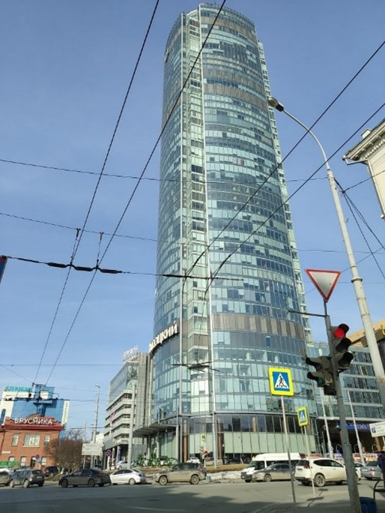
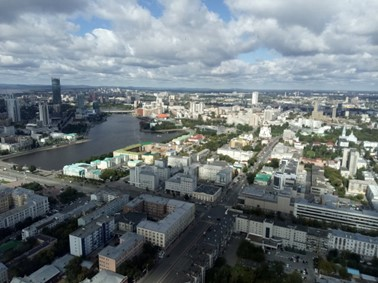

Смотровая площадка
бизнес центра "Высоцкий"
Открытая смотровая площадка расположена в Бизнес Центре «Высоцкий» на 52 этаже – на высоте 186 метров. Отсюда взору открывается поистине фантастический вид: панорама Екатеринбурга простирается вдаль на 25 километров.
Теперь екатеринбуржцы и гости города смогут открыть для себя Екатеринбург по-новому, увидеть его весь, как на ладони, оценить красоту и величие. Все посетители смотровой площадки могут ближе познакомиться с городом, прослушав увлекательную аудио-экскурсию, в которой раскрываются интересные факты из истории города, памятников, зданий, парков и других знаковых мест.
В каждом крупном городе мира высотки – культовое место, и Екатеринбург – не исключение. Со смотровой площадки небоскреба можно в непривычном ракурсе увидеть и архитектурные ансамбли исторической застройки, и екатеринбургские магистрали, и купола храмов.
Ни на одной открытке и фотографии нет такого захватывающего вида, который открывается из окон «Высоцкого»: оторвавшись от земли, поднявшись над суетой земной жизни, насладитесь видами города - третьей столицей России - города номер один для тех, кто его строит, создает и любит всем сердцем!
Безопасность площадки продумана в деталях: несмотря на открытое пространство (смотровая площадка находится под открытым небом), ее периметр огорожен высоким сверхпрочным стеклом. Так что нахождение на ней совершенно безопасно для всех без исключения.
Смотровая площадка – отличное место для романтических событий: свадьбы, предложения руки и сердца, признания в любви.  